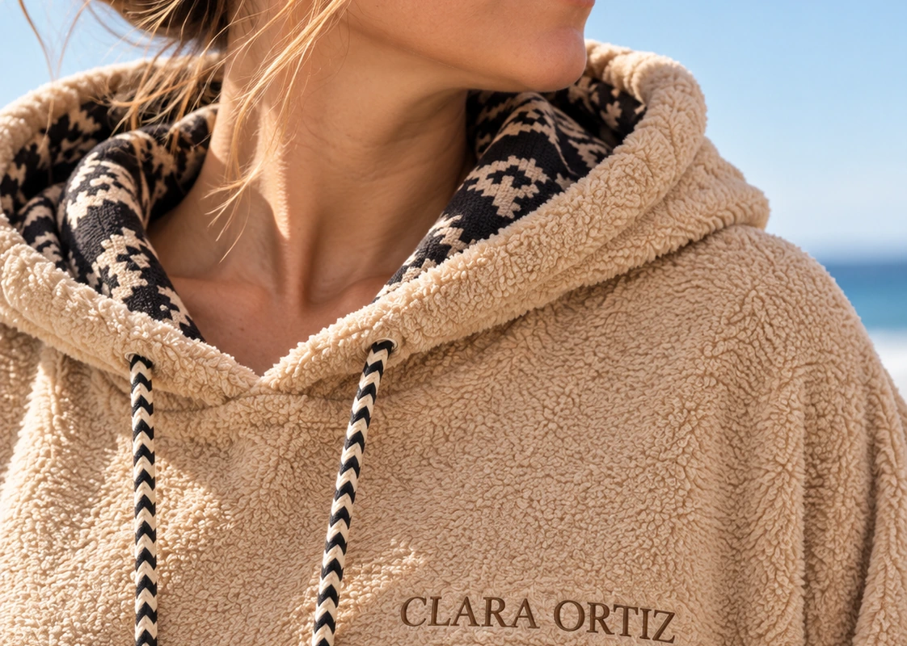
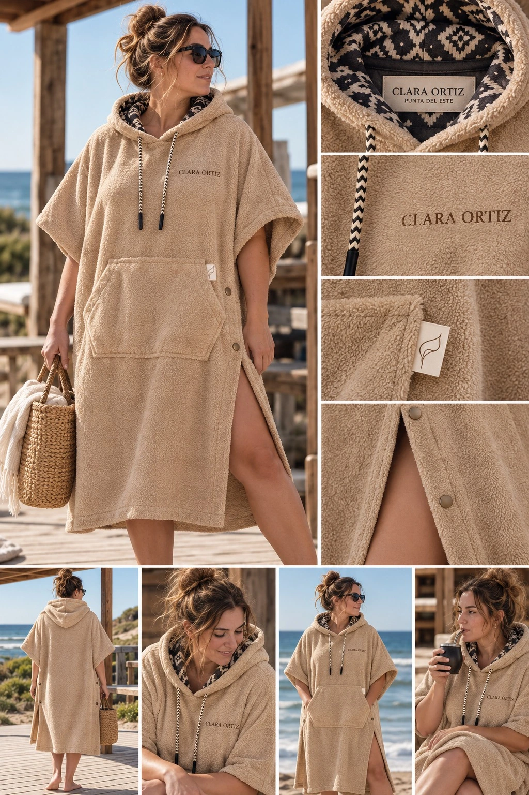

Una capucha con carácter
Un contraste de texturas y un interior estampado que aparece sutilmente al usarlo.
Un pequeño refugio para llevar puesto.
Salir del agua, sentir la brisa, quedarse un rato mirando el mar. MAREA nace para acompañar esos pequeños rituales que hacen especiales nuestros días de playa.
Un poncho pensado para envolverte en comodidad, secarte, abrigarte y cambiarte con libertad. Su silueta amplia acompaña diferentes cuerpos y sus detalles invitan a disfrutar sin apuro.
Imágenes conceptuales. La tela, las terminaciones y las prestaciones finales se confirmarán con el prototipo físico. Aún sin precio ni disponibilidad.
Para el desarrollo se propone toalla doble felpa pesada 100% algodón. Su absorción, gramaje, caída y resistencia deberán validarse con muestras y ensayos.
Se está explorando un compartimento con cierre integrado en el bolsillo canguro para pequeños objetos. No está confirmado para producción ni implica protección impermeable.
Las instrucciones de lavado y secado se definirán cuando se seleccione la tela y se pruebe el prototipo físico.
También importa lo que viene después. La arena todavía tibia, el viento que cambia, la charla que se alarga. MAREA acompaña ese instante en el que el tiempo parece ir un poco más despacio.

Un contraste de texturas y un interior estampado que aparece sutilmente al usarlo.
El isotipo pertenece al bolsillo frontal: una ubicación intencional y constante en el diseño.
Su forma envolvente, el bolsillo amplio y los laterales con broches articulan comodidad y funcionalidad.
Esta es la composición original del modelo: proporciones, estampa interior, ubicación del isotipo, bolsillo y broches. La conservamos para que el diseño siga siendo el punto de partida de cada decisión.
La lámina completa se muestra sin recortes ampliados ni pérdida artificial de definición.
Un poco de mar. Un poco de calma. Algo cómodo para llevar puesto.